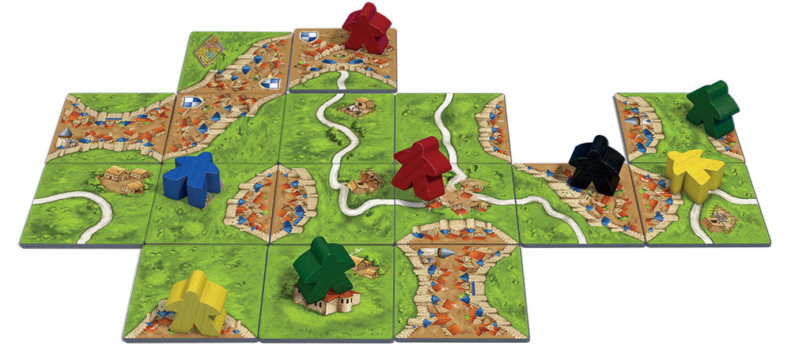

О серии игр "Каркассон" - магазин Nastolki.ru
Представляем вам новую серию игр "Каркассон" с множеством дополнений!
Как играть?
Игроки в «Каркассоне» составляют карту средневекового княжества из квадратов с нарисованными на них дорогами, городами, полями и монастырями. На эти дороги, города, поля и монастыри помещаются фишки игроков; впоследствии эти фишки приносят игрокам победные очки.
Несмотря на то, что в ходе игры один из игроков может сильно вырваться вперёд, победа присуждается только по результатам окончательного подсчёта очков.
Для кого эта игра?
- Для маленьких детей: они будут играть в неё как в сложный паззл с несколькими вариантами «решения». В этом случае «Каркассон» поспособствует развитию творческих навыков, визуальной памяти и мелкой моторики;
- Для детей от восьми лет: игра приобретает черты стратегии, развивая пространственное мышление, логику и умение управлять ресурсами;
- Для подростков и взрослых: это отличное развлечение, не требующее очень серьёзной сосредоточённости;
- Для большой семьи: и дети, и их родители смогут играть в «Каркассон» на равных.